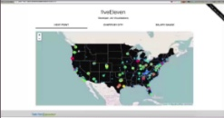

Jayne Doe
Master of shadows and the Internet!
About...
Hello! I'm an extremelyt driven and creative Full Stack Developeer who is currently open for career opportuniteis as a front-end or back-end web developoer in teh Greater Seattle Area
I'm a recent graduate of Coding Dojo, a coding school locatedin Bellevue, WA that teaches 3 full stacks in 3 months. I'm capable of learning new technologies very quickly, and am always looking for opportuniit3is to further expand my skills and grow as a developer.
Continue ReadingLaMode

La Mode is an Ecomerce website for designed to market varous clothing products. Users are able to view the available garmengts, select their desired quantity and comile a shopping cart for making a final purchase.
Technologies:


La Mode
Family Contacts

Family Contacs is a free applicatokn for managing, sharing and visualizing your family relationshsips for both extended and immediate family. As an essential feature of the project, you log-in information determines who youy can see and reveals how people are related to you.
Technologies:


Family Contacts
fiveEleven
Five eleven is a data visualization projext built on the Python software stactk. The application transforms the develeper job-hunt into a more visual user friendly experience. Based on location technology, popularity and other vast data sets, users may easily visualize the varing sizes and concentrations of the junior developer job marketg accross the nation.
Technologies:
fiveEleven
jdoe@gmail.com | 206-555-1212

jynedev

jayne-doe

jdtweets

jaynedev